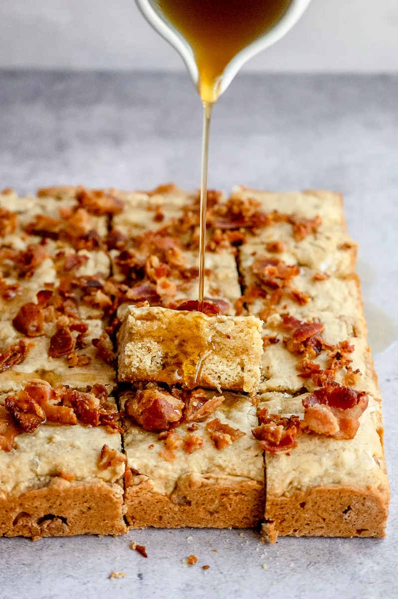

La Butter Board Criminal con Tocino y Miel

Esta es la receta original que hizo que TikTok perdiera la cabeza. Parece una tabla de quesos elegante, pero es mantequilla pura. En esta versión criminal, untamos 2 barras enteras de mantequilla en una tabla de madera y la cargamos con tocino crujiente, miel con ají y escamas de sal, creando una mezcla dulce, salada y grasosa que es imposible parar de comer. Además, es la excusa perfecta para comerte media barra de mantequilla con pan sin que nadie te diga nada.